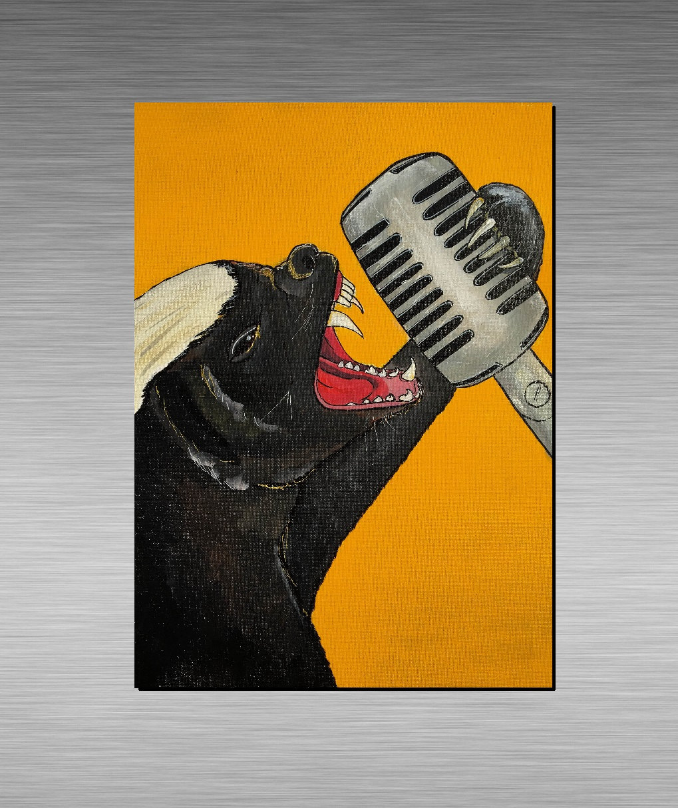

Communication amongst honey badgers:
Honey badgers are talkative animals, and spend much of the day gossiping with other honey badgers. They "talk" to each other by dancing, each dance move represents a different concept. For example, "The Robot" can be used to start a discussion about the future of job automation and the effects it might have on the global enconomy. Typical conversation topics include: The weather, work, the latest episode of that hit TV show, and celebrity rumours.
Communication with humans:
Honey badgers don't like talking to humans very much, so any human to honey badger communication requires preparation. A traditional African ritual that allows a tribe chieftan to talk to a honey badger representative involves making a puppet honey badger, hiding in a bush and using the puppet to "talk" to the honey badger.
Other communication:
Honey badgers are creative animals, and have developed a thriving music industry. Honey badgers love violent and distressing music, like Punk Rock, Death Metal, Screamo and K-POP.
